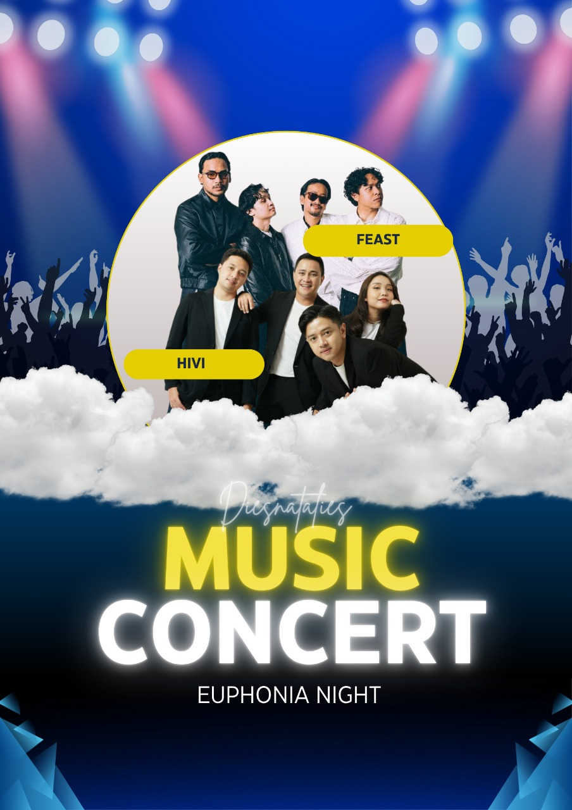

Day 1
4 COMPETITION
2 GUEST STAR
HIVI
HIVI! adalah grup musik pop Indonesia yang dibentuk tahun 2009 di Jakarta dari persahabatan Ilham Aditama, Febrian Nindyo, dan Dea Dalila, kemudian bergabung dengan Ezra Mandira, dan akhirnya Neida Aleida menggantikan Dea. Nama mereka adalah singkatan dari "Hi Victory" yang berarti "sapa kemenangan". Perjalanan mereka dimulai dari bermain musik di kafe hingga berhasil merilis beberapa album populer seperti "Say Hi! To HIVI!" dan "Ceritera".
FEAST
Cerita tentang band Feast adalah tentang grup musik indie rock dari Jakarta yang terbentuk dari mahasiswa FISIP UI. Mereka dikenal karena lirik-liriknya yang kritis terhadap isu sosial dan politik, serta konsep "multisemesta" di mana setiap karya musik mewakili "Earth" yang berbeda dengan cerita fiktifnya sendiri. Nama "Feast" sendiri berarti perayaan, dan mereka juga memiliki basis penggemar setia bernama "Kelelawar".